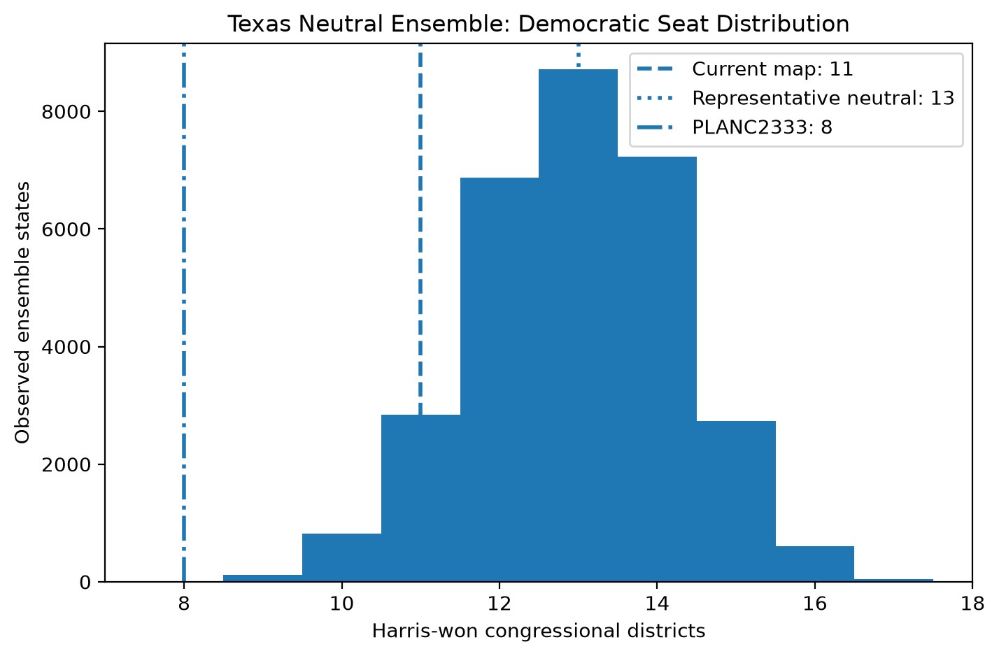
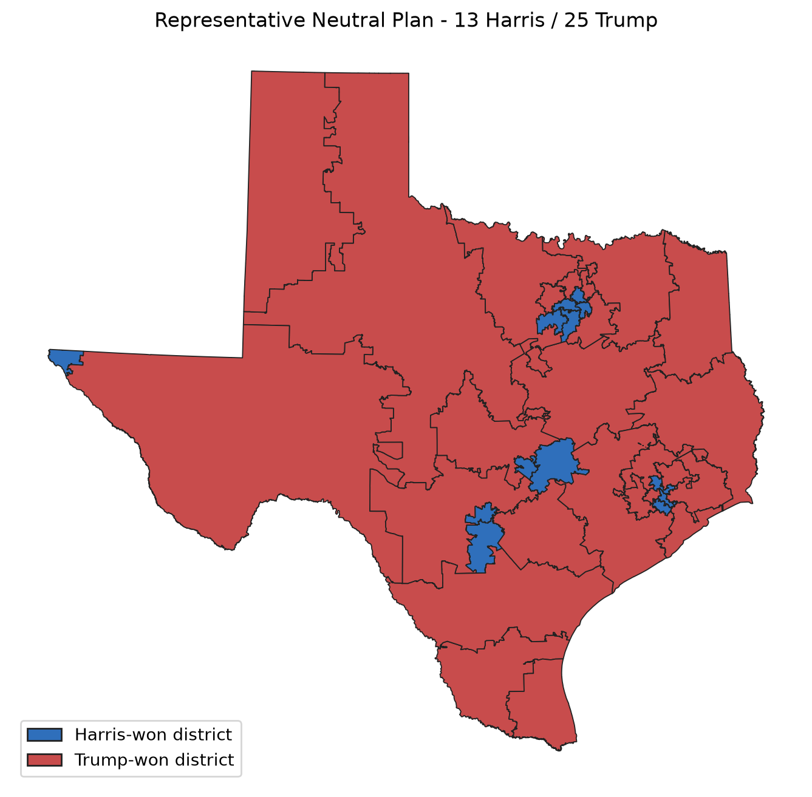

Why I started here
Texas is one of the newest states to redraw its district lines, and most gerrymandering projects haven't analyzed these maps yet. It's also an unusual case because Texas did a mid-decade redistricting in 2025, only four years after the last round. States normally wait until after the census every ten years.
With 38 congressional districts, it's one of the largest and most complex states to redistrict. I figured if the pipeline could handle Texas, it could handle anywhere.
The 2025 map is currently being challenged in LULAC v. Abbott. A three-judge federal panel heard nine days of testimony from 23 witnesses and found substantial evidence of racial gerrymandering. The Supreme Court later reversed the injunction on procedural grounds, but the full trial is still pending.
Results
The final analysis retains 30,000 post-burn-in ReCom states. Every generated plan contains 38 contiguous congressional districts and stays within +/-0.1% of ideal district population. The 2024 Harris-Trump presidential vote is used as the partisan proxy.
The 2025 map produces only 8 Democratic seats. No retained state went below 9 Harris-won districts. PLANC2333 has 8 and therefore lies below the observed seat distribution.
The older 2021 map produces 11 Democratic seats. That's on the lower end but still falls within the normal range, at the 2Below all percentile.


Assumptions
Every analysis makes simplifications. Here are mine and why they matter.
I used the Harris vs. Trump results to measure how each precinct leans. This follows the approach in Duchin's expert testimony in the Pennsylvania case and the MGGG Lab's published work. A stronger version would test multiple statewide races to confirm the finding holds.
The ensemble requires contiguous districts and population balance within +/-0.1%. It does not yet impose explicit compactness, county-preservation, or Voting Rights Act constraints.
The final pipeline uses Census-block population rather than precinct-centroid population assignment. Block records are aggregated to the validated 2024 precinct geography. The final precinct dataset contains 9,712 units, including 322 zero-population units, and preserves the exact statewide population total.
The final analysis retains 30,000 post-burn-in states. Because successive ReCom states are autocorrelated, these states are not treated as 30,000 independent observations. Effective sample sizes are approximately 98 for seat count, 92 for efficiency gap, and 118 for mean-median.
Data sources
| Dataset | Source | What it provides |
|---|---|---|
| 2024 General Election VTD Results | RDH / VEST | Precinct-level vote totals |
| 2020 PL 94-171 VTD data | Census Bureau via RDH | Population by VTD |
| 2025 Congressional Plan (PLANC2333) | Texas Legislative Council | Enacted 2025 boundaries |
| 2012-2021 Congressional Districts | Texas Legislative Council | Previous boundaries |